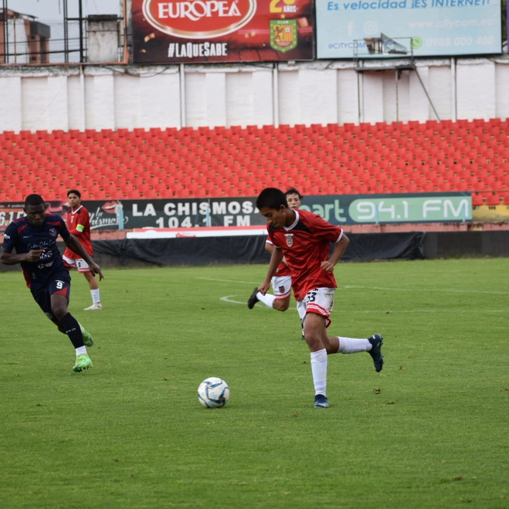

Nombre: Diego Francisco Andrade Gavilanes
Edad: 18 años
Ciudad: Cuenca, Ecuador
Correo: dfandrade.2@sudamericano.edu.ec
Institución: Instituto Sudamericano
• Conocimientos básicos de HTML y CSS.
• Conocimientos básicos de programación en Python.
• Manejo básico de herramientas informáticas.
• Trabajo en equipo y comunicación.
• Organización de actividades.
• Facilidad para aprender nuevos conocimientos.
• Resolución de problemas.
Disciplina: Me esfuerzo por cumplir mis actividades y objetivos.
Perseverancia: No me rindo fácilmente cuando algo se vuelve difícil.
Responsabilidad: Intento cumplir correctamente con mis deberes.
Compromiso: Me esfuerzo por dar lo mejor de mí en cada actividad.
Adaptabilidad: Tengo disposición para aprender y enfrentar nuevos retos.
Autoconfianza: Confío en mis capacidades y busco mejorar cada día.
• Respeto hacia los demás.
• Honestidad en mis acciones.
• Responsabilidad en mis compromisos.
• Humildad para reconocer mis errores.
• Perseverancia para alcanzar mis metas.
• Compañerismo y solidaridad.
Soy un estudiante responsable, dedicado y con muchas ganas de aprender cosas nuevas. Me considero una persona perseverante, disciplinada y comprometida con mis objetivos. Me gusta superar mis propios límites, adquirir conocimientos y mejorar constantemente tanto en el ámbito académico como en el personal.
Institución: Unidad Educativa Particular Hermano Miguel De La Salle Cuenca
Nivel: Tercero de Bachillerato
Durante mi formación académica he adquirido conocimientos en diferentes áreas como matemáticas, informática, ciencias naturales, historia y lenguaje. También he desarrollado habilidades de comunicación, organización y trabajo en equipo.
Nombre del curso: Python: Aprende a Programar
Área: Programación e informática
Mediante este curso he aprendido conceptos básicos de programación utilizando Python, como variables, tipos de datos, condiciones, ciclos y resolución de problemas. También he desarrollado mi pensamiento lógico y mi interés por la tecnología.
Actualmente no cuento con experiencia profesional, debido a que todavía me encuentro cursando mis estudios. Sin embargo, tengo interés en adquirir nuevos conocimientos, desarrollar habilidades y prepararme para futuras oportunidades laborales.
Me interesa mucho el deporte, especialmente el fútbol, ya que me permite desarrollar disciplina, resistencia y trabajo en equipo. También practico kickboxing y disfruto mantenerme activo físicamente.
Por otra parte, me interesa la tecnología, la informática, la programación y el diseño de páginas web. Me gusta aprender sobre nuevas herramientas y aplicaciones, así como explorar